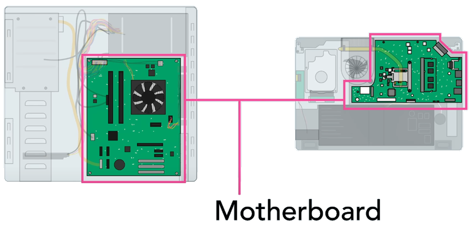
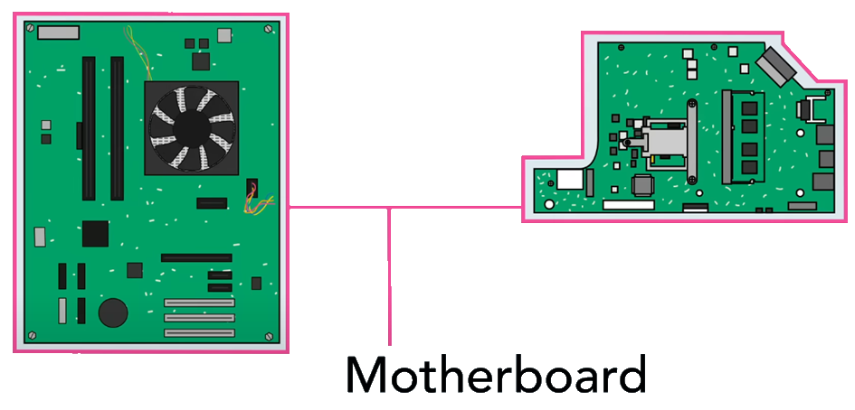
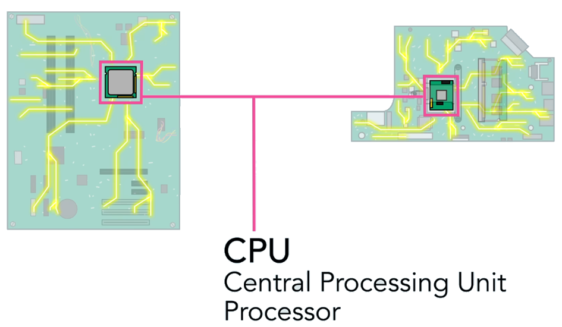
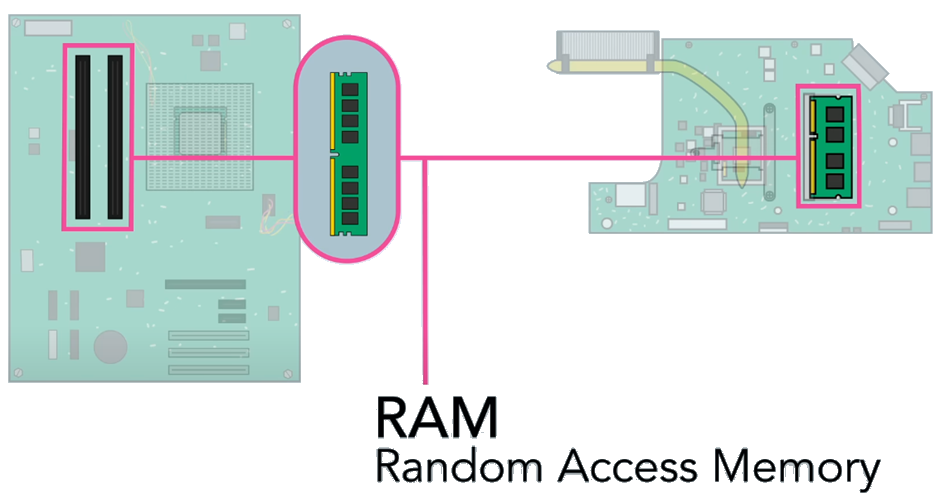
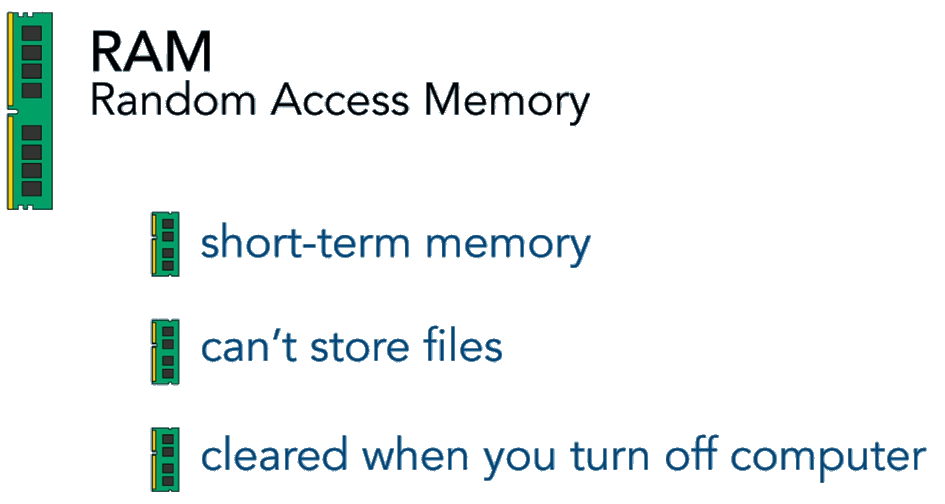
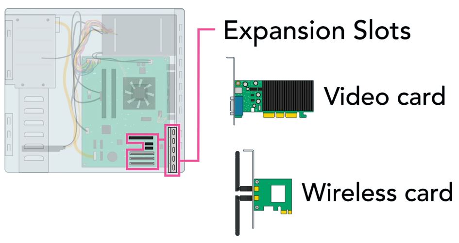
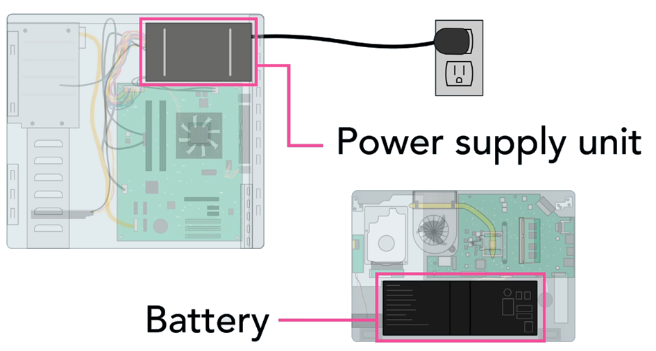

Ever wondered what's inside your computer? Let's explore the various components that make a computer work, whether it's a desktop or a laptop.
🖥️ Motherboard
 The motherboard is the backbone of your computer, connecting all components and allowing them to communicate. It houses crucial parts that power your machine.
Simple Example:
Think of the motherboard as a city’s main highway system. Just like highways connect different parts of a city, the motherboard connects all the components of your computer, allowing them to communicate and work together.
🧠 CPU (Central Processing Unit)
Often referred to as the brain of the computer, the CPU processes information and executes commands. It's protected by a heat sink that dissipates heat to keep it cool.
Simple Example:
The CPU is like a chef in a restaurant. Just as a chef takes orders and prepares meals, the CPU takes instructions from programs and processes data to produce results.
💾 RAM (Random Access Memory)
 RAM is your computer's short-term memory, used for active tasks. It's fast but volatile, meaning it loses data when the power is off.
Simple Example:
Imagine RAM as a whiteboard in a classroom. You can quickly write and erase information as needed (like opening and closing programs). It's fast to use, but when the class ends (computer turns off), everything is erased, ready for the next session.
💽 Storage
Storage is where your data lives. Traditional hard drives use magnetic platters, while solid-state drives (SSDs) offer faster speeds and durability.
Simple Example:
Storage is like a filing cabinet where you keep all your important documents. Just as you can store papers in a filing cabinet and retrieve them later, your computer stores files on a hard drive or SSD for future access.
🔌 Expansion Slots
Expansion slots on the motherboard allow for upgrades. You can enhance graphics with a video card or add wireless capabilities with a network card.
Simple Example:
Think of expansion slots like adding new apps to your smartphone. Just as you can download apps to add new features to your phone, you can use expansion slots to add new capabilities to your computer, like better graphics or faster internet.
🔋 Power Supply
The power supply unit converts electricity from the wall outlet to the various components. Laptops also feature batteries for portability.
📺 Watch the Video
Information source: Computer Basics: Inside a Computer